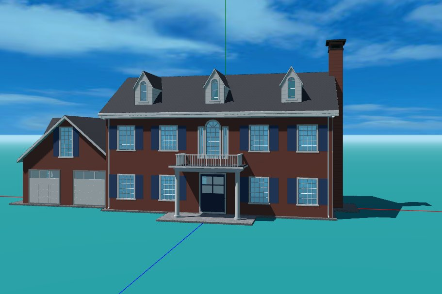

Aladdin’s AI Assistant reads pictures as well as words. You can attach a photograph of a house and ask it to build a 3D model. The model is an ordinary Aladdin building: every wall, window and roof plane can be selected, edited and simulated.
To attach a picture, drag it into the assistant’s input field, paste it from the clipboard, or use the picture button beside the field. Up to three images per request is allowed. You can send a picture with no text at all: the assistant is told to read it as a build request, though it may ask what you want done with it first. Not every AI model can read images. If you have selected one that cannot, Aladdin will tell you that the AI model does not support image input.
We present a series of examples to demonstrate this capability of Aladdin in the following sections.
A brick Colonial

Matched: the red brick, the five-bay two-storey front, the blue shutters, the three gabled dormers, the entry portico with its balcony and the arched window above, the garage wing on the west, the chimney on the east gable. Missed: the arched sash in the dormers, and the stone lintels and keystones over the windows. Built in one request, then corrected over a few messages. Photograph: lillisphotography / Getty Images / iStockphoto.
The same model, live. Click it to load, then orbit and click any part of the house to inspect it.
Matched: the hipped roof, the three dormers, the black shutters, the full-width veranda, the small pedimented portico over the door, and the lower wing on the east. Missed: the slimmer columns and the brighter white of the body. The porch railings in the first build came off with one message: “the porch in the photo does not have railings”. The reference here is a builder’s rendering rather than a photograph. Rendering: Architectural Designs, plan 62819DJ.
Matched: the cream body and black shutters, the five-bay two-storey block, the three gabled dormers, the one-storey wing on the west, the entry portico with its balustraded balcony, the brick chimney and the weathered brown roof. Missed: the small wing on the east, the sidelights and transom around the front door, the oval window beside it, and the moulded window heads. Built from one request; the west wing came back too long and was shortened in a follow-up message. Photograph: Woodruff Brown / Charles Hilton Architects.
Matched: the broad one-storey body under a low hipped roof, the three dormers in the front slope, the full-width raised veranda on square white posts with its railing, the centred entrance, the light siding with dark shutters and the divided-light windows. Missed: the pediments and arched sash over the dormers, the sidelights and transom framing the door, the entablature across the veranda, and the lattice skirting under the deck. Built from one request, then adjusted over a few follow-up messages: the main roof’s ridge was lengthened twice, the dormers were spread further apart, and the veranda was raised to the level of the house floor, which put a flight of steps down to the front walk. Photograph: The Spruce / Sarah Crowley.
Aladdin builds from a fixed set of parts. Walls do not curve: a bowed front comes out faceted, and a round tower is a sixteen-sided one. There are no quoins, engaged pilasters, string courses or rusticated bases. Fish-scale shingles and sawn corner brackets are not modelled, although bargeboards and porch friezes are. Each wall carries one window layout, so a front with deep ground-floor sashes under shorter upstairs ones cannot be laid out. Only the house is built from the picture: lawns, drives, planting and fences are not read off it, and are asked for separately.
The parts and the style recipes behind them are strongest on American architecture, so a photograph of an American house currently has the best chance of coming back recognizable. European and Asian houses are covered too, but more thinly, and a building far outside those traditions will come back as an approximation of its massing rather than of its detail.